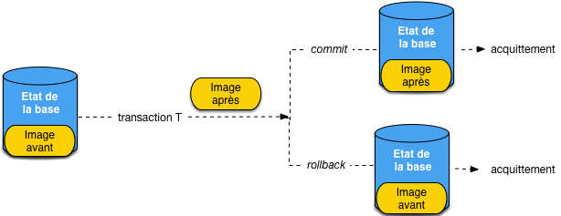
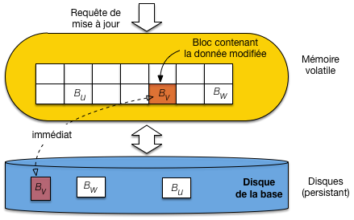
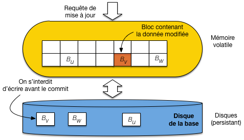
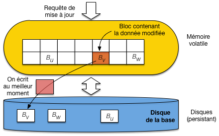
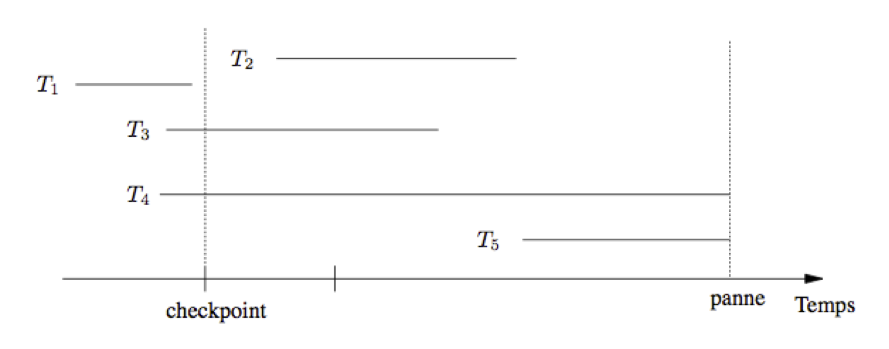
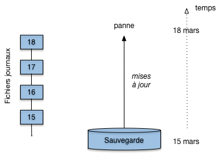

11. Reprise sur panne¶
Ce chapitre est consacré aux principes de la reprise sur panne dans les SGBD. La reprise sur panne consiste, comme son nom l’indique, à assurer que le système est capable, après une panne, de récupérer l’état de la base au moment où la panne est survenue. Le terme de panne désigne ici tout événement qui affecte le fonctionnement du processeur ou de la mémoire principale. Il peut s’agir par exemple d’une coupure électrique interrompant le serveur de données, d’une défaillance logicielle, ou des pannes affectant les disques Par souci de simplicité on va distinguer deux types de panne (quelle que soit la cause).
Panne légère: affecte la RAM du serveur de données, pas les disques
Panne lourde: affecte un disque
La problématique de la reprise sur panne est à rapprocher de la garantie de durabilité pour les transactions. Il s’agit d’assurer que même en cas d’interruption à t+1, on retrouvera la situation issue des transactions validées.
La première section discute de l’impact de l’architecture sur les techniques de reprise sur panne. Ces techniques sont ensuite développées dans les sections suivantes.
Vocabulaire
Dans ce qui suit, on utilise le vocabulaire suivant:
un enregistrement est la représentation d’une entité applicative mise à jour de manière atomique; dans le contexte d’une base relationnele, un enregistrement correspond à la représentation physique d’une ligne;
on s’autorise l’anglicisme mémoire cache ou simplement cache pour désigner la mémoire tampon;
enfin le bloc est l’unité d’échange entre la mémoire volatile et le disque; un bloc contient en général plusieurs enregistrements.
S1: introduction¶
Supports complémentaires:
L’état de la base¶
Commençons par définir une première notion très importante, l’état de la base.
Définition: l’état de la base?
On définit l’état de la base à un instant t commme l’état résultant de l’ensemble des transactions validées à l’instant t.
Pour assurer sécurité des données (face à une panne légère au moins), il est impératif que l’état de la base soit stocké sur support persistant, à tout instant. Une première règle simple est donc:
Règle 1
L’état de la base doit toujours être stocké sur disque
Pour le dire autrement, aucune donnée validée ne devrait être en mémoire RAM et pas sur le disque, car elle serait perdue en cas de panne.
Garanties transactionnelles¶
Souvenons-nous maintenant des propriétés des transactions.
Durabilité (et atomicité): quand le système rend la main après un
commit(acquittement), toutes les modifications de la transaction intègrent l’état de la base et deviennent permanentes.Recouvrabilité (et atomicité): tant qu’un
commitn’a pas eu lieu, toutes les modifications de la transaction doivent pouvoir être annulées par unrollback.
Nous avons déjà rencontré les notions de versions d’un nuplet en cours d’exécution d’une transaction, et nous les avons appelées image avant et image après. Rappelons leur définition:
Définition: image avant et image après
L’image après d’une transaction \(T\) désigne la nouvelle valeur des nuplets modifiés par \(T\). L’image avant désigne l’ancienne valeur de ces nuplets (avant modification).
L’exécution d’une transaction peut donc se décrire de la manière suivante, illustrée par la Fig. 11.1. Au départ, l’état de la base est stocké sur disque. Une partie de cet état correspond à l’image avant des nuplets qui vont être modifiés par la transaction. Au cours de la transaction, l”image après est constituée, et la transaction a, à chaque instant, deux possibilités:
un
commit, et l’image après remplace l’image avant dans l’état de la base;un
rollback, et l’état de la base est restauré comme initialement, avec l’image avant.
{kind=link}

Fig. 11.1 Problématique de la reprise sur panne en termes d’état de la base, image avant et image après.¶
Le moment où la transaction effectue un commit ou un rollback est crucial. Chacune
de ces instructions est « acquitté » quand le serveur de données rend la main au processus client.
Pour garantir le commit, la condition suivante doit être respectée.
Règle 2
L’image après doit être sur le disque avant l’acquittement du commit.
Si ce n’était pas le cas et qu’une panne survienne juste après l’acquittement, mais avant l’écriture de l’image après sur le disque, cette dernière serait en partie ou totalement perdue, et la garantie de durabilité ne serait pas assurée.
Maintenant, pour garantir le rollback, il faut pouvoir trouver sur le disque,
après une panne, les données modifiées par la transaction dans l’état où elles
étaient au moment où la transaction a débuté. La condition suivante doit être respectée.
Règle 3
L’image avant doit être sur le disque jusqu`à l’acquittement du commit.
On peut résumer la difficulté ainsi: jusqu’au commit, c’est l’image avant qui
fait partie de l’état de la base. Au commit, l’image après remplace
l’image avant dans l’état de la base. Il faut assurer que ce remplacement
s’effectue de manière atomique (« tout ou rien »)? La suite montre que ce n’est pas facile.
Quiz¶
Une panne légère est une panne qui affecte :
Quels sont les liens entre la reprise sur panne (RP) et les propriétés transactionnelles présentées dans les chapitres précédents ?
Indiquez, parmi les affirmations suivantes, celles qui sont incorrectes :
Une transaction T débutant à t0 et s’exécutant en isolation totale voit à un instant t :
S2: mise à jour différée, immédiate et opportuniste¶
Supports complémentaires:
Pour bien comprendre les mécanismes utilisés, il faut avoir en tête l’architecture générale d’un serveur de données en cours de fonctionnement, et se souvenir que la performance d’un système est fortement liée au nombre de lectures/écritures qui doivent être effectuées. La reprise sur panne, comme les autres techniques mises en œuvre dans un SGBD, vise à minimiser ces entrées/sorties.
La Fig. 11.2 rappelle les composants d’un SGBD qui interviennent dans la reprise sur panne. On distingue la mémoire stable ou persistante (les disques) qui survit à une panne légère de type électrique ou logicielle, et la mémoire instable ou volatile qui est irrémédiablement perdue en cas, par exemple, de panne électrique.

Fig. 11.2 Le cache et le disque, ressources mémoires allouées au SGBD¶
Or, pour des raisons de performance, le serveur de données cherche à limiter les accès aux disques, et s’appuie sur une mémoire tampon (buffer ou cache en anglais) qui stocke, en mémoire principale (donc instable) les blocs de données provenant des fichiers stockés sur disque. Que ce soit en lecture ou en écriture, le serveur va chercher à s’appuyer sur la mémoire tampon.

Fig. 11.3 Mise à jour dans le cache: faut-il écrire sur le disque ou pas?¶
Pour les écritures (cas qui nous intéresse ici), le serveur recherche tout d’abord si l’enregistrement est dans le cache. Si oui, la modification a lieu en mémoire, sinon le bloc contenant l’enregistrement est chargé du disque vers le cache, ce qui ramène au cas précédent.
Un bloc placé dans le cache et non modifié est l’image exacte du bloc correspondant sur le disque. Quand une transaction vient modifier un enregistrement dans un bloc, son image en mémoire (l’image après) devient différente de celle sur le disque (l’image avant). La Fig. 11.3 illustre la situation pour le bloc \(B_v\).
La question qui se pose alors, par rapport à la reprise sur panne, est de savoir quand il faut écrire un bloc modifié, et l’imopact qu’à cette stratégie d’écriture sur la gestion de la reprise. Nous allons étudier trois possibilités: écriture immédiate, écriture différée, et écriture opportuniste.
Ecritures immédiates¶
La stratégie d’écriture immédiate synchronise un bloc modifié avec son image dans le cache
dès qu’une mise à jour est effectuée (Fig. 11.4). Cela garantit que
l’image après est sur le disque, mais écrase l’image avant et risque donc de rendre impossible
un rollback.
{kind=link}

Fig. 11.4 Ecriture immédiate: le cache et le disque sont synchrones¶
L’écriture immédiate a un autre inconvénient: le coût d’écriture d’un bloc pour chaque mise à jour d’un nuplet. Pour des applications qui font beaucoup de modifications, les performances risquent d’être sévèrement affectées.
Ecritures différées¶
Les écritures différées fonctionnent à l’inverse des écritures immédiates: on garde dans le cache
tous les blocs modifiés, et on s’interdit de les écrire tant que les modifications ne font
pas l’objet d’un commit (Fig. 11.5).
{kind=link}

Fig. 11.5 Ecriture différée: On interdit l’écriture d’un bloc modifié avant le commit¶
Cette stratégie est en apparence plus satisfaisante pour la reprise sur panne: en cas de panne, la mémoire RAM contient l’image après qui doit justement être effacée, et le disque contient l’image avant qui doit être conservée. Elle a l’inconvénient de mobiliser potentiellement beaucoup de mémoire RAM en présence de grandes transactions qui font beaucoup de modifications. De plus, certains détails techniques sont compliqués: comment faire par exemple si un bloc contient des données modifiées par deux transactions, et que la première valide alors que la seconde annule?
Ecritures opportunistes¶
Enfin, la troisième stratégie est celle des écritures opportunistes. Dans ce cas, un bloc modifié en mémoire n’est pas écrit immédiatement, mais il peut l’être à un moment totalement indépendant du déroulement de la transaction, si le système l’estime nécessaire (Fig. 11.6).
{kind=link}

Fig. 11.6 Ecriture opportuniste: on attend la meilleure opportunité pour synchroniser le buffer et le disque.¶
C’est le mode le plus satisfaisant pour les performances, puisque le système peut choisir l’opprtunité offerte par un moment favorable pour écrire un bloc, en subissant un minimum de contraintes. C’est en apparence une stratégie très défavorable à la reprise sur panne puisque l’image après est partiellement en mémoire, partiellement sur le disque, et que l’image avant est partiellement effacée.
Nous verrons dans la prochaine session qu’aucune de ces stratégies n’est à elle seule suffisante pour concevoir et implanter un algorithme fiable de reprise sur panne.
Quiz¶
En mode opportuniste, quelle affirmation est exacte ?


En mode différé, quelle affirmation est exacte ?
En mode immédiat, quelle affirmation est exacte ?
S3: une approche simpliste¶
Supports complémentaires:
Si on veut concilier à la fois de bonnes performances par limitation des entrées/sorties et la garantie de reprise sur panne, on réalise rapidement que le problème est plus compliqué qu’il n’y paraît. Voici par exemple un premier algorithme, simpliste, qui ne fonctionne pas. L’idée est d’utiliser le cache pour les données modifiées (donc l’image après, cf. le chapitre Contrôle de concurrence), et le disque pour les données validées (l’image avant).
Algorithme simpliste:
ne jamais écrire une donnée modifiée par une transaction T avant que le
commitn’arrive,au moment du
commitde T, forcer l’écriture de tous les blocs modifiés par T.
Pourquoi cela ne marche-t-il pas? Pour des raisons de performance et des raisons de correction (la reprise n’est pas garantie).
Surcharge du cache. Si on interdit l’écriture des blocs modifiés, qui peut dire que le cache ne va pas, au bout d’un certain temps, contenir uniquement des blocs modifiés et donc épinglés en mémoire? Aucune remplacement ne devient alors possible, et le système est bloqué. Entretemps il est probable que l’on aura assisté à une lente diminution des performances due à la réduction de la capacité effective du cache.
Ecritures aléatoires. Si on décide, au moment du
commit, d’écrire tous les blocs modifiés, on risque de déclencher des écritures, à des emplacements éloignés, de blocs donc seule une petite partie est modifiée. Or un principe essentiel de la performance d’un SGBD est de privilégier les écritures séquentielles de blocs pleins.Risque sur la recouvrabilité. Que faire si une panne survient après des écritures mais avant l’enregistrement du
commit?
Dans le dernier cas, on ne peut simplement plus assurer une reprise. Donc cette solution est inefficace et incorrecte. On en conclut que les fichiers de la base ne peuvent pas, à eux seuls, servir de support à la reprise sur panne. Nous avons besoin d’une structure auxiliaire, le journal des transactions.
Quiz¶
Le point de commit est une notion qui désigne :
En mode opportuniste, je peux garantir :
En mode immédiat, je peux garantir :
En mode différé, je peux garantir :
S4: journal des transactions¶
Supports complémentaires:
Un journal des transactions (log en anglais) est un ensemble de fichiers complémentaires à ceux de la base de données, servant à stocker sur un support non volatile les informations nécessaires à la reprise sur panne. L’idée de base est exprimée par l’équation suivante:
L’état de la base
Etat de la base = journaux de transactions + fichiers de la base
Le journal contient les types d’enregistrements suivants:
start(T)
write(T, x, old_val, new_val)
commit
rollback
checkpoint
L’enregistrement dans le journal des opérations de lectures n’est pas nécessaire, sauf pour de l’audit éventuellement. Le journal est un fichier séquentiel, avec un cache dédié, qui fonctionne selon la technique classique. Quand le cache est plein, on écrit dans le fichier et on vide le cache. Les écritures sont séquentielles et maximisent la rentabilité des entrées/sorties. On doit écrire dans le journal (physiquement) à deux occasions.
Règle du point de commit.
Au moment d’un commit le
cache du journal doit être écrit sur le disque (écriture forcée). On
satisfait donc l’équation: l’état de la base est sur le disque au
moment où l’enregistrement commit est écrit dans le fichier journal.
Règle dite write-ahead
Si un bloc du fichier de données, marqué comme modifié mais non validé, est écrit sur le disque, il va écraser l’image avant. Le risque est alors de ne plus respecter l’équation, et il faut donc écrire dans le journal pour être en mesure d’effectuer un rollback éventuel.
La Fig. 11.7 explique
ce choix qui peut sembler inutilement complexe.
Elle montre la structure des mémoires
impliquées dans la gestion du journal des transactions. Nous
avons donc sur mémoire stable (c’est-à-dire non volatile, résistante
aux coupures électriques) les fichiers de la base d’une part,
le fichier journal de l’autre. Si possible ces fichiers
sont sur des disques différents. En mémoire centrale nous
avons un cache principal stockant une image partielle des
fichiers de la base, et un cache
pour le fichier journal. Une donnée modifiée et
validée est toujours dans le fichier
journal. Elle peut être
dans les fichiers de la base, mais seulement une fois que le bloc
modifié est écrit, ce qui finit toujours par arriver
sur la durée du fonctionnement normal d’un système. Si tout
allait toujours bien (pas de panne, pas de rollback),
on n’aurait jamais besoin du journal.

Fig. 11.7 Gestion des écritures avec fichier journal¶
Quiz¶
Quelle affirmation, relatives au contenu du log, est-elle inexacte ?
La règle du point de commit vise à garantir :
Dans quel mode n’est-t-il pas nécessaire d’appliquer la règle du write-ahead logging ?
Quelle affirmation sur le fonctionnement du log est-elle fausse ?
S5: Algorithmes de reprise sur panne¶
Supports complémentaires:
Si une panne légère (pas de perte de disque) survient, il faut effectuer deux types d’opérations:
refaire (Redo) les transactions validées avant la panne qui ne seraient par correctement écrites dans les fichiers de la base;
défaire (Undo) les transactions en cours au moment de la panne, qui avaient déjà effectué des mises à jour dans les fichiers de la base.
Ces deux opérations sont basées sur le journal. On doit
faire un Redo pour les transactions validées (celles
pour lesquelles on trouve un commit dans le journal)
et un Undo
pour les transactions actives (celles qui n’ont ni
commit, ni rollback dans le journal).
La notion de checkpoint¶
En cas de panne, il faudrait en principe refaire
toutes les transactions du journal, depuis l’origine
de la création de la base, et défaire celles
qui étaient en cours. Au moment d’un checkpoint,
le SGBD écrit sur disque tous les blocs
modifiés, ce qui garantit que les données validées par
commit sont dans la base. Il devient inutile de faire un
Redo pour les transactions validées avant
le checkpoint.
{kind=link}

Fig. 11.8 Reprise sur panne après un checkpoint¶
La Fig. 11.8 montre un exemple, avec un checkpoint survenant après la validation de T_1. Toutes les mises à jour de T_1 ont été écrites dans les fichiers de la base au moment du checkpoint, et il est donc inutile d’effectuer un Redo pour cette transaction. Pour toutes les autres le Redo est indispensable. Les mises à jour de T_2 par exemple, bien que validées, peuvent rester dans le cache sans être écrites dans les fichiers de la base au moment de la panne. Elles sont alors perdues et n’existent que dans le journal.
Un checkpoint prend du temps: il faut écrire sur le disque tous les blocs modifiés. Sa fréquence est généralement paramétrable par l’administrateur. Il est indispensable de maîtriser la taille des journaux de transactions qui, en l’absence de mesures de maintenance (comme le checkpoint) ne font que grossir et peuvent atteindre des volumes considérables.
Avec mises à jour différées¶
Voici maintenant un premier algorithme correct, qui s’appuie sur l’interdiction de toute écriture d’un bloc contenant des mises à jour non validées. L’intérêt est d’éviter d’avoir à effectuer des Undo à partir du journal. L’inconvénient est de devoir épingler des pages en mémoire, avec un risque de se retrouver à court d’espace disponible.
Au moment d’un commit, on écrit d’abord dans le journal,
puis on retire l’épingle des données du cache pour qu’elles
soient écrites. Il n’y a jamais besoin de faire un Undo.
C’est un algorithme NO-UNDO/REDO:
on constitue la liste des transactions validées depuis le dernier checkpoint;
on prend les entrées
writede ces transactions dans l’ordre de leur exécution, et on s’assure que chaque donnée x a bien la valeurnew_val.
On peut aussi refaire les opérations dans l’ordre inverse, en s’assurant qu’on ne refait que la dernière mise à jour validée.
L’opération de Redo est idempotente: on peut la réexécuter autant de fois qu’on veut sans changer le résultat de la première exécution. C’est une propriété nécessaire, car la reprise sur panne elle-même peut échouer!
Avec mise à jour immédiates ou opportunistes¶
Dans ce second algorithme (de loin le plus répandu), on autorise l’écriture de blocs modifiés. Dans ce cas il faut défaire les mises à jours de transactions annulées. Il existe deux variantes:
Avant un commit, on force les écritures dans la base: il n’y a jamais jamais besoin de faire un Redo (Undo/No-Redo)
Si on ne force pas les écritures dans la base, c’est un algorithme Undo/Redo, le plus souvent rencontré car il évite le flot d’écriture aléatoires à déclencher sur chaque
commit.
L’algorithme se décrit simplement comme suit:
on constitue la liste des transactions actives \(L_A\) et la liste des transactions validées \(L_V\) au moment de la panne;
on annule les écritures de \(L_A\) avec le journal: attention les annulations se font dans l’ordre inverse de l’exécution initiale;
on refait les écritures de \(L_V\) avec le journal.
Notez qu’avec cette technique on ne force jamais l’écriture des données modifiées (sauf aux checkpoints) donc on attend qu’un flush (mise sur disque des blocs modifiées) intervienne naturellement pour qu’elles soient placées sur le disque.
Quiz¶
Dans quel mode ne faut-il pas faire un Redo ?
S6: pannes de disque¶
Supports complémentaires:
Journaux et sauvegardes¶
Le journal peut également servir à la reprise en cas de perte d’un disque. Il est cependant essentiel d’utiliser deux disques séparés. Les sauvegardes binaires (les fichiers de la base), associées aux journaux des mises à jour, vérifient en effet l’équation suivante:
Règle 3
Etat de la base = sauvegarde binaire + journaux des mises à jour
En ré-exécutant ces modifications à partir d’une sauvegarde, on récupère l’état de la base au moment de la panne d’un disque. Deux cas se présentent: panne du disque contenant le journal (appelons-le \(D_l\)) et panne du disque contenant les fichiers de la base (appelons-le \(D_b\)).
La panne du disque journal est très grave car il devient alors impossible
de reconstituer correctement la base. Il se peut notamment que des transactions
en cours d’exécution aient déjà écrit sur le disque de la base. L’image
avant est alors seulement dans le journal, se trouve donc perdue,
et il devient impossible d’annuler la transaction. Forcer les transactions
en cours à effectuer un commit, et ce au moment d’une panne de disque, n’est
pas une solution viable.
Il faut à tout prix protéger le journal, soit en utilisant des systèmes RAID de disques redondants, soit en le répliquant dans un site sûr.
En cas de panne du disque de la base, il faut en fait effectuer une reprise sur panne à partir des journaux, en appliquant les Redo et Undo à la dernière sauvegarde disponible.
{kind=link}

Fig. 11.9 Reprise à froid avec une sauvegarde et des fichiers log¶
La Fig. 11.9 montre une situation classique, avec un sauvegarde effectuée le 15 mars, des fichiers journaux avec un checkpoint quotidien, chaque checkpoint entraînant la création d’un fichier physique supplémentaire. En théorie seul le dernier fichier journal est utile (puisque seules les opérations depuis le dernier checkpoint doit être refaites). C’est vrai seulement pour des reprises à chaud, après coupure de courant. En cas de perte d’une disque tous les fichiers journaux depuis la dernière sauvegarde sont nécessaires.
Il faut donc que l’administrateur réinstalle un disque neuf et y place la sauvegarde du 15 mars. Il demande ensuite au système une reprise sur panne depuis le 15 mars, en s’assurant que les fichiers journaux sont bien disponibles depuis cette date. Sinon l’état de la base au 18 mars ne peut être récupéré, et il faut repartir de la sauvegarde.
On réalise l’importance des journaux et de leur rôle pour le maintien des données. Un soin tout particulier (sauvegardes fréquentes, disques en miroir) doit être consacré à ces fichiers sur une base sensible. Autant la reprise peut s’effectuer automatiquement après une panne légère, de type coupure d’électricité, autant elle demande des interventions de l’administrateur, parfois délicates, en cas de perte d’un disque. On parle respectivement de reprise à chaud et de reprise à froid. Bien entendu les procédures de reprise doivent être testées et validées avant qu’un vrai problème survienne, sinon on est sûr de faire face dans la panique à des difficultés imprévues.
Voici comment fonctionne alors la journalisation.
Au moment d’un
commit. Juste avant lecommit, le système écrit dans le journal l’image après des enregistrements modifiés par la transaction. Pourquoi ne pas écrire les pages contenant les enregistrements modifiés? Pour plusieurs raisons, la principale étant que s’il y a n enregistrements modifiées, répartis dans (au pire) n pages, il faut écrire ces n pages sur le disque, souvent sans contiguité, ce qui est très coûteux.En revanche ces n enregistrements peuvent être regroupés dans une petit nombre de pages du buffer du journal puis écrits séquentiellement dans ce dernier. En résumé cette technique est beaucoup plus performante.
Quand le buffer principal est plein. Il faut alors replacer sur le disque certaines pages du buffer principal (flush). Si une page contient l’image après non validée d’un enregistrement, InnoDB risque de perdre l’image avant et donc d’être incapable d’effectuer un
rolbacken cas d’annulation ou de panne. L’image avant est donc au préalable écrite dans le journal.Les enregistrements validés sont simplement écrits sur le disque. Leur image dans le buffer principal et sur le disque redevient donc synchronisée.
Il existe également forcément un version de cette image après dans le journal, qui n’est plus utile que pour les lectures cohérentes des transactions qui auraient commencé avant la modification de l’enregistrement.
Au moment d’un
rollback. InnoDB remplace les images après par les images avant, soit stockées sur le disque, soit placées dans le journal après un flush.
Avec cet algorithme, toutes les données validées sont toujours sur disque, soit dans les fichiers de la base, soit dans le journal. Ce dernier peut contenir aussi bien des enregistrements validés, présents dans le buffer principal, mais pas encore flushés dans les fichiers de la base, que des enregistrements de l’image avant qui ont été remplacés par leur image après suite à un flush.
Quiz¶
Exercices¶
Exercice ex-rp1: la reprise sur panne à la main
Soit le fichier journal suivant (les écritures les plus anciennes sont en haut).
start(T1) write (T1, x, 10, 20) commit(T1) checkpoint start(T2) write(T2, y, 5, 10) start(T4) write(T4, x, 20, 40) start(T3) write(T3, z, 15, 30) write(T4, u, 100, 101) commit(T4) write (T2, x, 40, 60) ......................... panne!Questions.
Indiquer la reprise sur panne avec l’algorithme Undo/Redo
Donner le comportement de la variante avec mise à jour différée (No-Undo/Redo). Y a-t-il des informations inutiles dans le journal?
Exercice ex-rp2: la reprise sur panne à la main
Spécifiez un algorithme de Redo qui effectue le parcours du log dans l’ordre inverse des insertions, et s’arrête dès que possible.
Exercice ex-rp3: petit questionnaire
Indiquez la bonne réponse aux questions suivantes (en les justifiant).
Pendant une reprise sur panne les opérations doivent être,:
commutatives
associatives
idempotentes
distributives.
Dans un protocole de reprise sur panne avec mise à jour différée, quelles sont les opérations nécessaires:
Undo
Redo
Undo et Redo
aucune des deux.
Dans le cas d’un algorithme avec mises à jour différées, que doit-on conserver dans le log,?
la valeur avant mise à jour
la valeur après mise à jour
les valeurs avant et après mise à jour
uniquement les
start(T)etcommit(T)
Exercice ex-rp4: pourquoi dans l’ordre inverse?
Donner un exemple illustrant la nécessité d’effectuer un Redo dans l’ordre inverse de l’exécution (donner les entrées du fichier journal, et expliquer le déroulement de l’annulation).

Ce cours de Philippe Rigaux est mis à disposition selon les termes de la licence Creative Commons Attribution - Pas d’Utilisation Commerciale - Partage dans les Mêmes Conditions 4.0 International.
Table Of Contents
- 1. Introduction
- 2. Dispositifs de stockage
- 3. Structures d’index: l’arbre B
- 4. Structures d’index: le hachage
- 5. Moteurs de stockage
- 6. Opérateurs et algorithmes
- 7. Evaluation et optimisation
- 8. Travaux pratiques: optimisation
- 9. Transactions
- 10. Contrôle de concurrence
- 11. Reprise sur panne
- 12. Annales des examens
Recherche
Saisissez un ou plusieurs mots-clés.